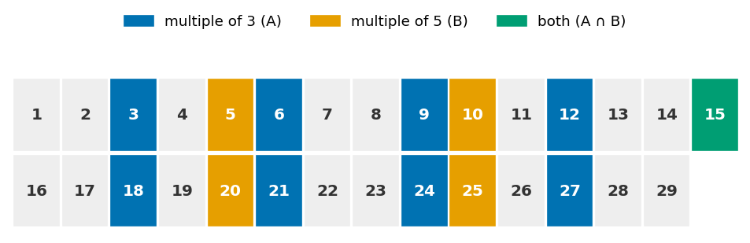
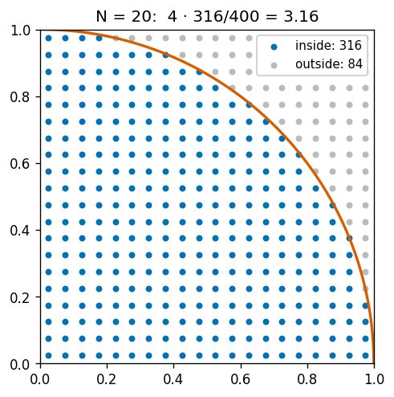
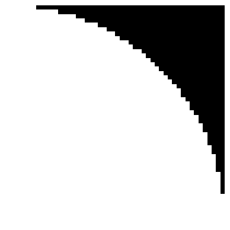
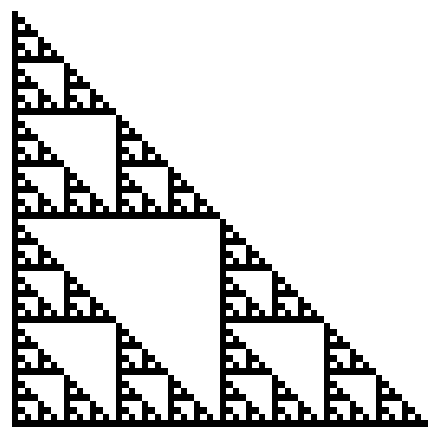

import matplotlib.pyplot as plt
import numpy as npMasking: Sets and Logic
Module 3: NumPy
Masking: Sets and Logic
Masking means using an array of True and False values to select or modify part of another array. If the idea feels new, here is the good news: you already know it from mathematics. A mask is a set. Every rule you know about sets (intersection, union, complement, counting) has a NumPy version.
In this lesson we build masks from numbers and treat them as sets. In the next lesson, Masking with Images, we apply the same rules to pictures.
A Mask Is a Set
Take the universe \(U = \{1, 2, \dots, 20\}\) and the set of even numbers in it:
\[A = \{x \in U : x \text{ is even}\}\]
In NumPy, the universe is an array and the condition “\(x\) is even” becomes a comparison:
numbers = np.arange(1, 21) # the universe U
is_even = numbers % 2 == 0 # the condition, checked for every element
print(numbers)
print(is_even)[ 1 2 3 4 5 6 7 8 9 10 11 12 13 14 15 16 17 18 19 20]
[False True False True False True False True False True False True
False True False True False True False True]The comparison does not return the set \(A\) directly. It returns one answer per element of \(U\): “is this element in \(A\)?”. In mathematics this is the indicator function of \(A\):
\[\mathbf{1}_A(x) = \begin{cases} 1 & \text{if } x \in A \\ 0 & \text{if } x \notin A \end{cases}\]
True behaves as 1 and False as 0, so the mask is the indicator function evaluated on every element of \(U\):
print(is_even.astype(int))[0 1 0 1 0 1 0 1 0 1 0 1 0 1 0 1 0 1 0 1]To obtain the set itself, we index the universe with the mask. NumPy keeps the elements where the mask is True:
print(numbers[is_even]) # the set A[ 2 4 6 8 10 12 14 16 18 20]
Two arrays, two roles
is_evenis the mask: it has the same length asnumbers, and it only containsTrue/False.numbers[is_even]is the selection: it contains only the elements of \(A\), so it is usually shorter.
Most masking errors come from mixing up these two arrays.
Set Operations Are Logical Operations
Let’s add a second set, the multiples of 3: \(B = \{x \in U : 3 \mid x\}\).
is_mult3 = numbers % 3 == 0
print(numbers[is_mult3]) # the set B[ 3 6 9 12 15 18]Every set operation has an element-wise logical operator:
| Mathematics | Meaning | NumPy |
|---|---|---|
| \(A \cap B\) | in \(A\) and in \(B\) | is_even & is_mult3 |
| \(A \cup B\) | in \(A\) or in \(B\) | is_even | is_mult3 |
| \(A^c = U \setminus A\) | not in \(A\) | ~is_even |
| \(A \setminus B\) | in \(A\) and not in \(B\) | is_even & ~is_mult3 |
| \(\lvert A \rvert\) | number of elements | np.sum(is_even) |
| \(\lvert A \rvert / \lvert U \rvert\) | proportion of \(U\) | np.mean(is_even) |
| \(\exists x \in U : x \in A\) | at least one | np.any(is_even) |
| \(\forall x \in U : x \in A\) | all of them | np.all(is_even) |
print("A ∩ B:", numbers[is_even & is_mult3])
print("A ∪ B:", numbers[is_even | is_mult3])
print("A^c: ", numbers[~is_even])
print("A \\ B:", numbers[is_even & ~is_mult3])A ∩ B: [ 6 12 18]
A ∪ B: [ 2 3 4 6 8 9 10 12 14 15 16 18 20]
A^c: [ 1 3 5 7 9 11 13 15 17 19]
A \ B: [ 2 4 8 10 14 16 20]As expected, \(A \cap B\) contains the multiples of 6.
Because True is 1 and False is 0, adding a mask counts its elements, and averaging it gives a proportion, that is, the probability that a random element of \(U\) belongs to the set:
print("|A| =", np.sum(is_even))
print("|A ∩ B| =", np.sum(is_even & is_mult3))
print("P(x ∈ A ∪ B) =", np.mean(is_even | is_mult3))|A| = 10
|A ∩ B| = 3
P(x ∈ A ∪ B) = 0.65np.any() and np.all() play the role of the quantifiers \(\exists\) and \(\forall\):
print(np.any(numbers[is_even] > 15)) # is some even number above 15?
print(np.all(numbers[is_even & is_mult3] % 6 == 0)) # is every element of A ∩ B a multiple of 6?True
True
Exercise: De Morgan’s Laws
De Morgan’s laws state that
\[(A \cup B)^c = A^c \cap B^c \qquad \text{and} \qquad (A \cap B)^c = A^c \cup B^c\]
- Write both sides of each law with the masks
is_evenandis_mult3, and check that they are equal withnp.array_equal(). - Which numbers of \(U\) are neither even nor multiples of 3? Answer with a single mask.
Solution
law_1 = np.array_equal(~(is_even | is_mult3), ~is_even & ~is_mult3)
law_2 = np.array_equal(~(is_even & is_mult3), ~is_even | ~is_mult3)
print(law_1, law_2)
print(numbers[~(is_even | is_mult3)])True True
[ 1 5 7 11 13 17 19]These are the numbers coprime with 6. Notice that np.array_equal() returns a single True or False, while == on two arrays would return one value per element.
Masking with Numbers
Let’s go back to the midterm one last time. In Session 15 we computed the final grade of every student, but we left one question open: who passed?
students = np.array(["Ana", "Bruno", "Chloe", "Diego", "Emma", "Farid"])
final_grades = np.array([8, 5, 9, 4.5, 9, 5])
passed = final_grades >= 5
print(passed)
print(final_grades[passed])[ True True True False True True]
[8. 5. 9. 9. 5.]The mask describes the set of students who passed. Because students is also an array with the same length, the same mask selects the names:
print(students[passed])
print(students[~passed]) # the complement: who failed['Ana' 'Bruno' 'Chloe' 'Emma' 'Farid']
['Diego']Counting the set is a sum, as before:
print(np.sum(passed), "students passed")5 students passed
Exercise: Passing Point, Revisited
In Session 15 we read from the output after which exercise Ana reached 50 points. Now let NumPy find it: combine a mask with np.argmax(), which returns the position of the first True.
ana_cumulative = np.array([15, 35, 40, 50, 55, 60, 65, 65, 70, 75, 80])
Solution
reached = ana_cumulative >= 50
print(np.argmax(reached) + 1) # 44np.argmax() on a Boolean array returns the index of the first True (since True is the maximum). We add 1 to turn the index into an exercise number.
Exercise: Predict the Mask
Without running the code, write what it prints. Then modify it to select the values greater than or equal to 5.
values = np.array([2, 5, 8, 1, 9])
mask = values % 2 == 1
print(values[mask])
Solution
[5 1 9]The mask is True for the odd values, so only those are selected.
values = np.array([2, 5, 8, 1, 9])
mask = values >= 5
print(values[mask]) # [5 8 9][5 8 9]Changing Values with a Mask
A mask on the left of = changes only the selected elements and leaves the rest untouched. Suppose every student gets 1.5 bonus points, but grades cannot go above 10:
with_bonus = final_grades + 1.5
with_bonus[with_bonus > 10] = 10 # only the grades above 10 change
print(with_bonus)[ 9.5 6.5 10. 6. 10. 6.5]When we want to choose between two values for every element, np.where(mask, value_if_true, value_if_false) builds a new array. It is the array version of if ... else:
print(np.where(passed, "Pass", "Fail"))['Pass' 'Pass' 'Pass' 'Fail' 'Pass' 'Pass']Common Pitfalls
Parentheses around each condition
Run this code and read the error:
multiples = numbers[numbers % 3 == 0 | numbers % 5 == 0]ValueError: The truth value of an array with more than one element is ambiguous.In Python, | and & are evaluated before ==, so Python reads numbers % 3 == (0 | numbers % 5) == 0, which is not what we meant. Always wrap each condition in parentheses:
multiples = numbers[(numbers % 3 == 0) | (numbers % 5 == 0)]
print(multiples)[ 3 5 6 9 10 12 15 18 20]and, or, not do not work on arrays
both = (numbers % 3 == 0) and (numbers % 5 == 0)ValueError: The truth value of an array with more than one element is ambiguous.The keywords and, or and not need one single True or False, and Python does not know how to turn a whole array into one value (should it use “any” or “all”?). For masks, use the element-wise operators &, | and ~.
Values are not positions
What is wrong with this code?
arr = np.array([2, 8, 1, 9, 3, 7])
high = arr[arr > 6] # [8 9 7]
arr[high] = -1IndexError: index 8 is out of bounds for axis 0 with size 6high contains the values of the selected elements, not their positions, so arr[high] tries to read position 8. Use the mask itself to modify the array:
arr = np.array([2, 8, 1, 9, 3, 7])
arr[arr > 6] = -1
print(arr)[ 2 -1 1 -1 3 -1]If you do need the positions of the True values, use np.flatnonzero(mask).
Exercises
Multiples of 3 or 5
Inspired by Project Euler, Problem 1.
The natural numbers below 10 that are multiples of 3 or 5 are 3, 5, 6 and 9, and their sum is 23.

- Write a function
multiples_3_or_5(n)that returns the sum of all the natural numbers belownthat are multiples of 3 or 5. Use a mask instead of a loop. Check thatmultiples_3_or_5(10)returns23. - Let \(A\) be the multiples of 3 below 1000 and \(B\) the multiples of 5. Use masks to check the inclusion–exclusion principle: \(|A \cup B| = |A| + |B| - |A \cap B|\). What is \(A \cap B\)?
- The same principle works for sums. The multiples of \(d\) below \(n\) are \(d, 2d, \dots, md\) with \(m = \lfloor (n-1)/d \rfloor\), and their sum is \(d \cdot \frac{m(m+1)}{2}\). Compute the answer for \(n = 1000\) with this formula, without any array, and compare it with your function.
Solution
def multiples_3_or_5(n: int) -> int:
"""
Sum the natural numbers below n that are multiples of 3 or 5.
Parameters
----------
n : int
Upper limit (excluded). Must be positive.
Returns
-------
int
The sum of the multiples of 3 or 5 below n.
"""
numbers = np.arange(1, n)
mask = (numbers % 3 == 0) | (numbers % 5 == 0)
return int(np.sum(numbers[mask]))
print(multiples_3_or_5(10))23numbers = np.arange(1, 1000)
in_a = numbers % 3 == 0
in_b = numbers % 5 == 0
print(np.sum(in_a | in_b))
print(np.sum(in_a) + np.sum(in_b) - np.sum(in_a & in_b))466
466Both counts are equal. \(A \cap B\) is the set of multiples of 15: they appear in both \(A\) and \(B\), so adding \(|A|\) and \(|B|\) counts them twice.
def sum_of_multiples(d: int, n: int) -> int:
"""Sum the multiples of d below n with the triangular number formula."""
m = (n - 1) // d
return d * m * (m + 1) // 2
formula = sum_of_multiples(3, 1000) + sum_of_multiples(5, 1000) - sum_of_multiples(15, 1000)
print(formula, multiples_3_or_5(1000))233168 233168The formula needs three multiplications, whatever the value of \(n\), while the mask builds an array of \(n\) elements. Masks are a great way to check a formula, but a formula, when we have one, is faster.
Estimating π by Counting Points
The quarter disc \(D = \{(x, y) \in [0, 1]^2 : x^2 + y^2 < 1\}\) has area \(\pi / 4\). If we cover the unit square with a regular grid of \(N \times N\) points, the proportion of points that fall inside \(D\) approximates that area.

- Build the grid coordinates
x = (np.arange(N) + 0.5) / N, the centres of \(N\) equal cells. - Use broadcasting to build an \(N \times N\) mask that is
Truewhere \(x^2 + y^2 < 1\). - Use the mask to estimate \(\pi\) for \(N = 10, 100, 1000\). How fast does the error decrease?
- Display the mask with
plt.imshow(inside, cmap="gray"). This is an extension, remembermatplotlibis not part of this course.
Solution
for N in [10, 100, 1000]:
x = (np.arange(N) + 0.5) / N
inside = x[:, np.newaxis] ** 2 + x[np.newaxis, :] ** 2 < 1
estimate = 4 * np.mean(inside) # proportion of points inside, times 4
print(f"N = {N:4d}: π ≈ {estimate:.6f}, error = {abs(estimate - np.pi):.6f}")N = 10: π ≈ 3.160000, error = 0.018407
N = 100: π ≈ 3.142800, error = 0.001207
N = 1000: π ≈ 3.141676, error = 0.000083N = 50
x = (np.arange(N) + 0.5) / N
inside = x[:, np.newaxis] ** 2 + x[np.newaxis, :] ** 2 < 1
plt.imshow(inside, cmap="gray", origin="lower")
plt.axis("off")
plt.show()
np.mean(inside) is \(|D \cap \text{grid}| \,/\, |\text{grid}|\), so this is a counting version of an integral. In Session 19 we will replace the regular grid with random points: that is the Monte Carlo method.
Pascal’s Triangle and the Sierpiński Triangle
Each row of Pascal’s triangle is built from the previous one: every entry is the sum of the two entries above it, \(\binom{n}{k} = \binom{n-1}{k-1} + \binom{n-1}{k}\).
- Build a \(64 \times 64\) array
pascalwhere row \(n\) holds \(\binom{n}{0}, \dots, \binom{n}{n}\) followed by zeros. You may loop over the rows, but compute each row from the previous one in a single line, with slicing. To avoid huge numbers, store each entry modulo 2. - Build the mask of the odd entries and display it with
plt.imshow(odd, cmap="gray_r"). Your result should look like the picture below. Do you recognise the shape? This is an extension, remembermatplotlibis not part of this course. - How many entries of the first 64 rows are odd? Can you guess a formula for the first \(2^k\) rows?

Solution
N = 64
pascal = np.zeros((N, N), dtype=int)
pascal[:, 0] = 1 # the first entry of every row is 1
for n in range(1, N):
pascal[n, 1:] = (pascal[n - 1, 1:] + pascal[n - 1, :-1]) % 2
odd = pascal == 1
plt.imshow(odd, cmap="gray_r")
plt.axis("off")
plt.show()
print(np.sum(odd), 3**6)
729 729The odd entries draw the Sierpiński triangle, a fractal. The first \(2^k\) rows contain \(3^k\) odd entries: each triangle is made of three copies of the previous one, each with half the size.
Bonus. Lucas’s theorem says that \(\binom{n}{k}\) is odd exactly when every binary digit of \(k\) is at most the matching digit of \(n\). With integers, & is the bitwise AND, so this condition is (n & k) == k, and the whole mask can be built without any loop:
n = np.arange(N)[:, np.newaxis]
k = np.arange(N)[np.newaxis, :]
odd_lucas = (k <= n) & ((n & k) == k)
print(np.array_equal(odd, odd_lucas))TrueThis is also why & works on masks: True and False are the bits 1 and 0, and AND on a single bit is exactly the logical “and”.
Summary and Reflection
- A Boolean mask is the indicator function of a set: one
True/Falseper element. array[mask]retrieves the elements of the set;array[mask] = valuemodifies only them.&,|and~are intersection, union and complement. Place each comparison in parentheses.np.sum(mask)counts the elements of the set andnp.mean(mask)gives its proportion.np.any()andnp.all()are the quantifiers “there exists” and “for all”.np.where(mask, a, b)chooses between two values for every element.
Explain why Python’s scalar operators and, or, and not cannot be used directly with Boolean arrays.
Next: Masking with Images
Now apply the same ideas to pictures.
Homework and Review
Work through the homework exercises available here.